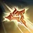

Akshan
buffRiot listed this change, but the preview has no numbers for it yet.
Every Summoner's Rift change with the exact numbers, what they mean, and where each champion stands in this tier list right now.
Chips: tier and score per role right now (Emerald+, all regions). Score = win rate points above the role average, corrected for small samples.
Riot listed this change, but the preview has no numbers for it yet.
 RSummon: Tibbers
RSummon: Tibbers
Was1150 - 3500 (+50% AP)Now1275 - 4000 (+50% AP) (+150% bonus health)
8 - 16 (+4% AP) → 10 - 20 (+4% AP)
Was30 - 60 (+10% AP)Now30 / 50 / 70 (+10% AP)
Base stats
525 → 550
 WArise!
WArise!
50% → 67%
QCosmic Binding
Was80 - 240 (+80% AP)Now80 - 260 (+100% AP)
WEssence Flux
Was80 - 300 (+100% bonus AD) (+90% AP)Now80 - 300 (+115% bonus AD) (+100% AP)
RTrueshot Barrage
Was350 - 750 (+100% bonus AD) (+110% AP)Now350 - 850 (+110% bonus AD) (+120% AP)
 WShield of Durand
WShield of Durand
Was7.5 - 13.5% of max healthNow8 - 20% of max health
QBoomerang Throw / Boulder Toss
Was5 - 165 (+125% AD)Now5 - 165 (+135% AD)
Was45 - 225 (+140% AD)Now45 - 225 (+150% AD)
 WPath Maker
WPath Maker
45 - 65 → 45
45 - 165 → 45 - 205
10 - 80% → 10 - 75%
 QRadiant Volley
QRadiant Volley
5 - 25 (+8% AP) → 6 - 26 (+9% AP)
Was85 / 120 / 165 / 220 / 285 (+65 / 73 / 81 / 89 / 97% AP)Now90 / 126 / 172 / 228 / 294 (+70 / 79 / 88 / 97 / 106% AP)
WRebuttal
Was50 - 170 (+50% AP)Now50 - 210 (+50% AP)
35 - 55 (+10% AP) → 35 - 75 (+10% AP)
 RLife Form Disintegration Ray
RLife Form Disintegration Ray
450 / 700 / 925 → 450 / 700 / 950
ERelentless Force
Was10 - 90 (+110% AD) (+100% AP)Now10 - 110 (+110% AD) (+100% AP)

QSigil of Malice40% → 35%
QAlpha Strike
Was20 - 100 (+70% AD)Now20 - 100 (+60% AD)
Was35 - 175 (+122.5% AD)Now35 - 175 (+105% AD)
 EScatter the Weak
EScatter the Weak
50 → 60
15s → 17 / 16.5 / 16 / 15.5 / 15s
Who builds it: OP.GG core builds, boots and starting items, Global Emerald+.
Was9% | 7% of target's current healthNow8% | 6% of target's current health
Core item for 14 listed champions (Jungle 12, Mid 5, Top 2, Support 2)
Source: Riot Phroxzon's preview of 26.23, numbers as listed on strafe.com, reasons as reported by strafe.com, gameriv.com and insider-gaming.com. Written short in our own words, the numbers are copied as listed. ARAM, Arena, Classic and other modes are left out on purpose.